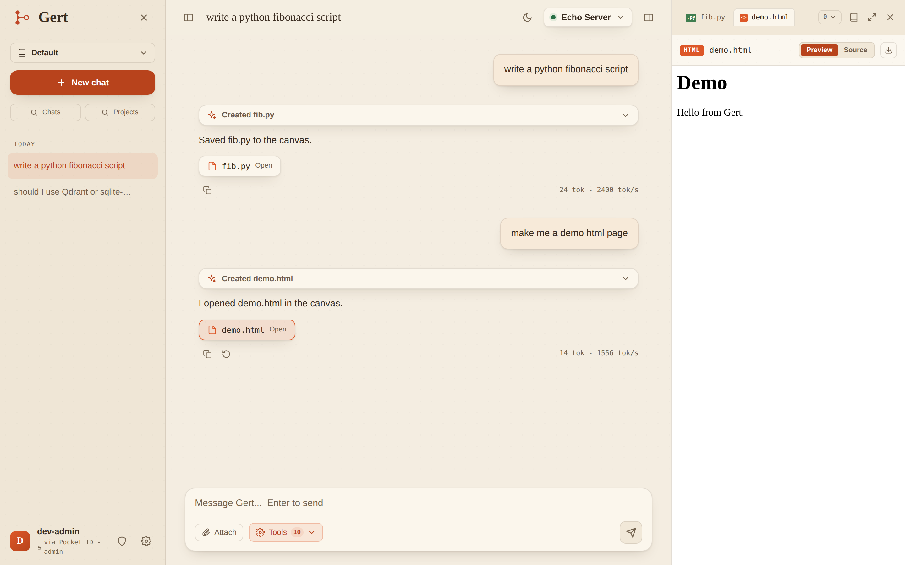
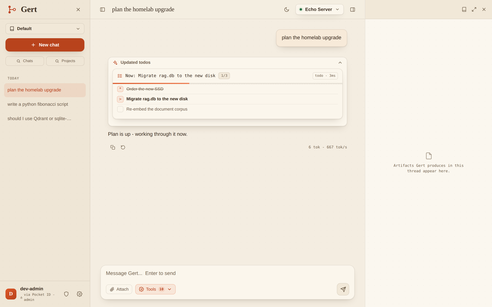

Everything you expect from modern AI chat
Streaming chat with a full tool loop - against any OpenAI-compatible model server you run yourself, like vLLM.
Hybrid RAG over your documents
Upload PDFs, DOCX, markdown. Vector KNN (sqlite-vec) + BM25 (FTS5) fused with Reciprocal Rank Fusion, with inline citations back to page and file.
Sandboxed Python
The model runs code in an ephemeral gVisor container: no network egress, read-only rootfs, CPU/memory/PID caps. Only stdout comes back.
Web search, SSRF-hardened
Self-hosted SearXNG search with an optional fetch-and-summarize step that blocks private ranges, re-vets every redirect, and caps size and time.
Artifacts canvas
Named code fences become live canvas tabs - HTML preview, source view, download. Reload the thread and they're still there.
Projects & memory
Each project is its own folder with isolated chats, documents, and memory. Pinned memory rides the system prompt; the rest is retrieved on demand.
Turns survive disconnects
Generation runs detached on a background worker; every event is persisted before publish. Reload mid-answer and resume from the exact token via SSE or polling.
Passkey login
OIDC + PKCE against Pocket ID with WebAuthn passkeys. RS256-pinned JWT validation; tokens live in memory only, never localStorage.
Hardened ingestion
PDF/DOCX parsing runs in an unprivileged, rlimit-capped subprocess - XXE disabled, zip-bomb caps. A hostile file fails that document, never the host.
No npm, no CDN
The SPA is VanJS with vendored libs, served by the API itself on one origin - strict CSP, no CORS, no build step, no supply chain to audit.
See it work


Up and running in minutes
Point Gert at your vLLM box and your OIDC issuer. That's the whole config.
// appsettings.json - point Gert at your model server and OIDC issuer
{
"Gert": {
"Chat": {
"Providers": {
"qwen36": {
"Name": "Qwen 3.6",
"Type": "openai",
"Default": true,
"Capabilities": [ "tools", "vision" ],
"Parameters": { "BaseUrl": "http://192.168.1.50:8000", "Model": "qwen36" }
}
}
},
"Embeddings": {
"Type": "OpenAI",
"Parameters": { "BaseUrl": "http://192.168.1.50:8000", "Model": "bge-m3" }
},
"Tools": {
"Search": { "Parameters": { "BaseUrl": "http://localhost:8080" } }
}
},
"Auth": { "Authority": "https://id.example.com", "Audience": "gert-api" },
"Storage": { "DataRoot": "/data", "ExpectedIssuer": "https://id.example.com" }
}dotnet run --project src/Gert.Api -c Release